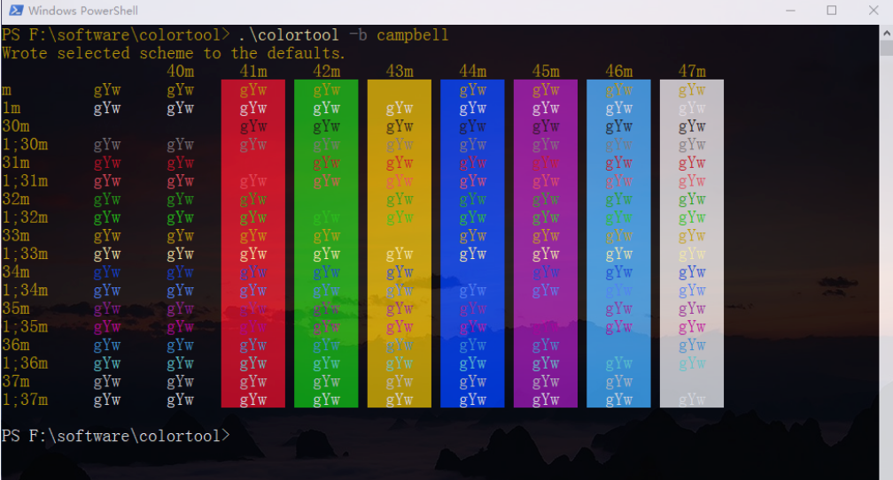
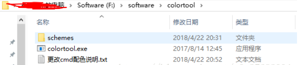
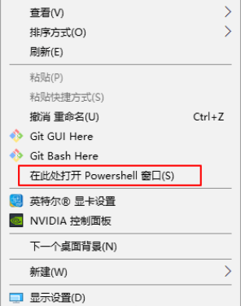

首先附上一张效果图
（使用的是campbell配色，然后我自己更改了一下透明度和字体大小）

好了，教程上：
- 首先，点击下载文件（密码：fd22）
- 然后，解压至任一文件夹，最好放到一个英文目录下，以后最好能够找到，因为不喜欢配色的话还可以去修改。

- 然后在当前目录下打开windows powershell，这里提供一个快捷打开方式：在当前目录下，按住shift键，单击鼠标右键，然后在弹出的菜单中，选择在此处打开powershell。

- 最后在命令行输入
colortool -b campbell |
如果提示出错什么的，请修改为
.\colortool -b campbell |
注意：campbell为schemes目录下的文件名，就是一个配色方案，可以根据自己的喜好修改为其他方案
好了，最后，献上官方地址 ，到这里就结束了！